Embark on a journey through time in the mystical city of Bagan, where over 2,000 ancient temples stand as silent witnesses to a rich tapestry of history and spirituality. Explore the architectural wonders and cultural marvels that make Bagan a timeless destination, captivating hearts with its unique charm.
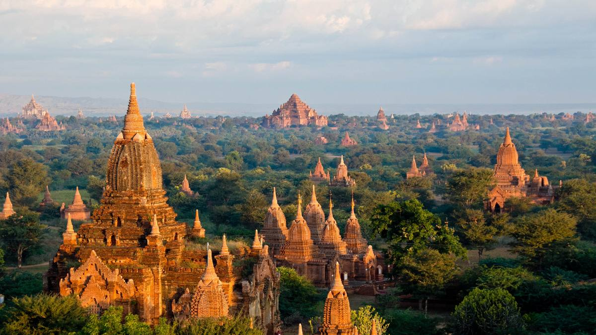
Bagan's landscape captivates with a breathtaking panorama of ancient temples scattered across the horizon. As the sun paints the sky in warm hues, the silhouette of these timeless structures creates a stunning, serene beauty that transports you to a world where history and nature converge in perfect harmony.
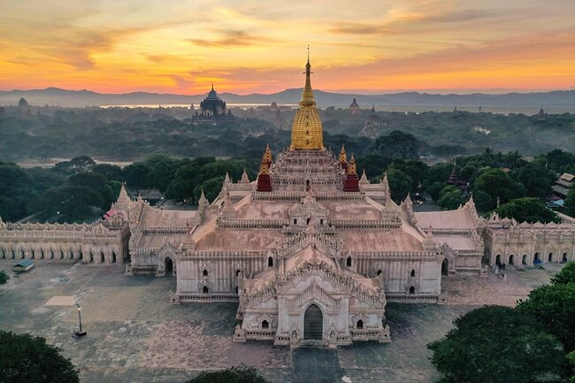
Ananda Temple stands as a majestic masterpiece, embodying the elegant fusion of Mon and Indian architectural styles.Glistening in gold and adorned with intricate carvings, it enshrines four standing Buddhas, each facing a cardinal direction, radiating a serene and spiritual ambiance.
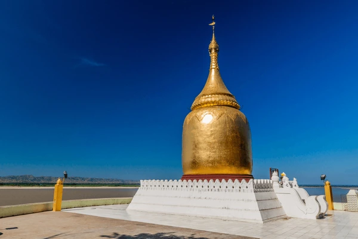
Perched along the Ayeyarwady River, the Bupaya Pagoda is a distinctive landmark with its bulbous, gourd-shaped stupa.
Bathed in a golden glow during sunset, Bupaya offers a mesmerizing view of the river and the surrounding plains, creating a tranquil atmosphere.
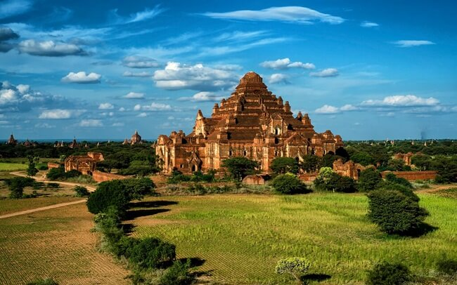
Dhammayangyi Temple, the largest in Bagan, is an imposing structure with a unique pyramidal shape. Built with precision and symmetry, it echoes a sense of grandeur.
Despite its incomplete interior, the temple stands as a testament to Bagan's architectural prowess during the height of the Pagan Kingdom.
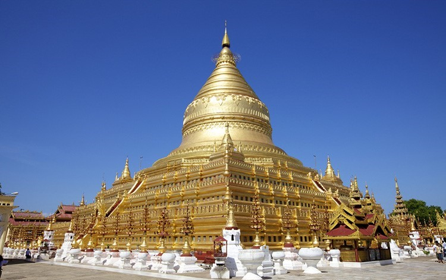
Shwezigon Pagoda, a revered religious site, is characterized by its gleaming golden exterior and stunning architecture.
Built to enshrine a bone and tooth relics of Gautama Buddha, this pagoda is a symbol of spiritual devotion and an integral part of Bagan's historical and cultural legacy.
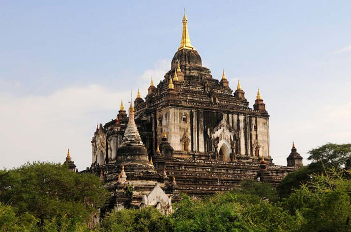
Thatbyinnyu Temple, Bagan's tallest temple, stands tall and proud against the skyline. Renowned for its height and architectural finesse, it provides panoramic views of the ancient city. Its intricate details and commanding presence make it a must-visit site for those exploring the archaeological wonders of Bagan.
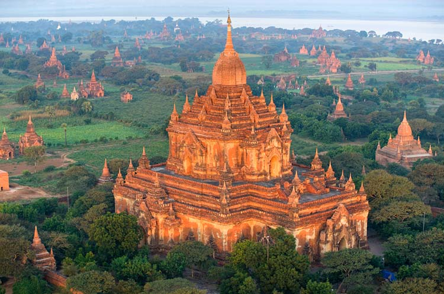
Htilominlo Temple is an architectural gem adorned with exquisite stucco carvings and intricate plasterwork. Its multi-story structure stands as a testament to the artistic achievements of the Pagan period. Visitors can marvel at the detailed craftsmanship and soak in the historical significance of this well-preserved temple in the heart of Bagan
Explore Bagan's charm through captivating visuals in our 'Gallery' section. Immerse yourself in the beauty of ancient temples, vibrant festivals, and enchanting landscapes. Let the images speak the tale of Bagan's allure.
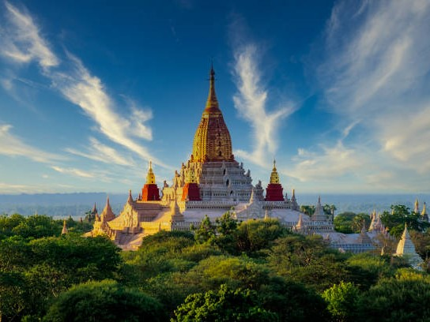
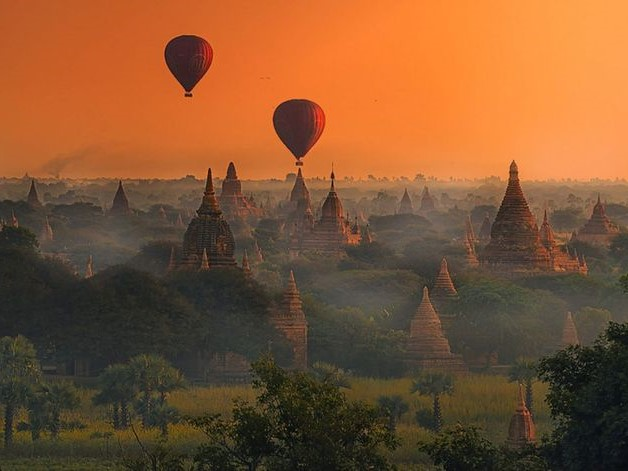
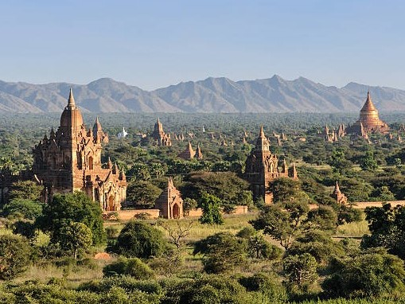
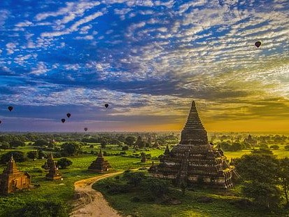
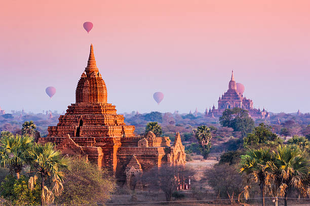
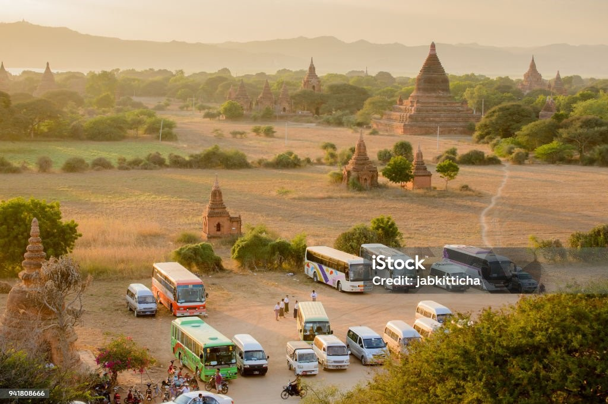
Plan your trip during the cool and dry season from November to February for pleasant weather and clear views of Bagan's ancient temples.
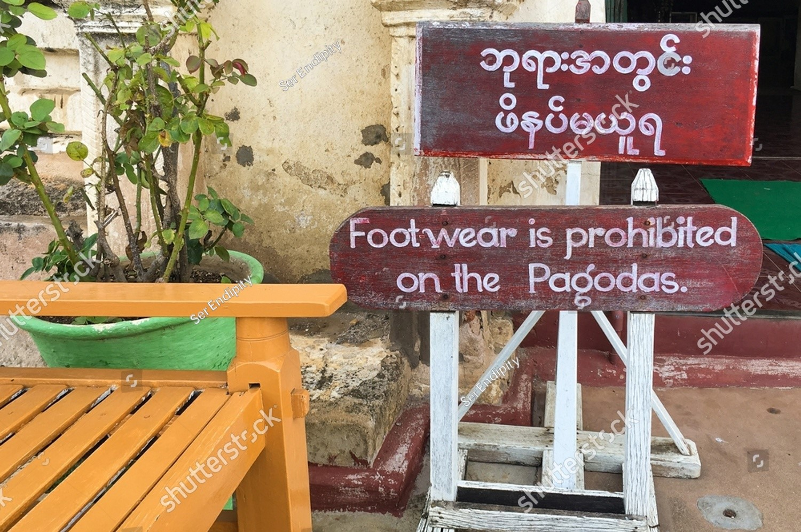
When exploring temples, be prepared to remove your shoes. Dress modestly, and remember to show respect by refraining from climbing on structures.
Due to the warm climate, wear sunscreen, hats, and sunglasses to protect against the sun. Stay hydrated by carrying water during your explorations.
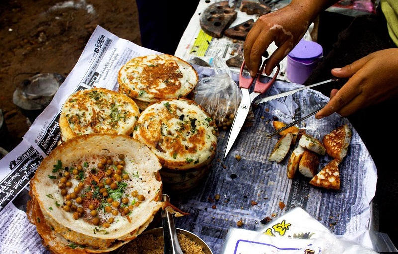
Enhance your experience with local guides who can provide cultural insights. Don't miss trying authentic local cuisine; explore street food stalls and popular restaurants for a taste of Bagan's flavors.
If you want to know more about Bagan, you can contact me through the contact info given here.Instagram:shwe.sinphoo